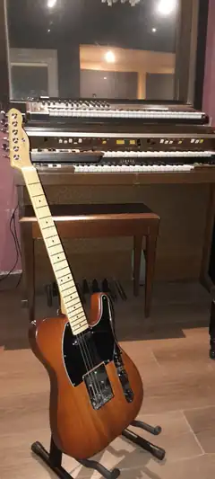

DejavuUrbe
Una historia que comenzó en 1999 y que, más de dos décadas después, volvió a ponerse en movimiento.
Antes del disco estuvieron las canciones.
DejavuUrbe nació en 1999, entre ensayos, canciones propias y primeras fechas en vivo. Desde el comienzo, el repertorio fue el centro del proyecto: canciones construidas para funcionar como banda, con melodía, arreglos y una identidad que fue tomando forma sobre el escenario.
En 2000 llegó el primer demo, integrado por cuatro canciones. Ese material abrió una de las primeras puertas públicas del grupo: la participación en Talentos y Talentitos, programa emitido por Canal 26 bajo la conducción de César Notaro.
En aquellos primeros años DejavuUrbe también compartió escenario con Los Nietos de Chuck, formación de quienes posteriormente serían conocidos como Airbag. Fue una etapa de ensayos, actuaciones y construcción de un repertorio propio.
En 2002 ese recorrido quedó registrado en el disco físico Dejavu urbe, grabado en los estudios de NEO Producciones. El álbum dejó documentada una parte central de aquella primera etapa y de las canciones que años después volverían a formar parte de la historia de la banda.

![Contraportada del disco físico Dejavu urbe de 2002 con fotografía de la banda y listado de canciones]()
Volver sin empezar de cero.
Con el paso de los años los integrantes siguieron distintos caminos, pero las canciones quedaron. En enero de 2025 DejavuUrbe volvió a reunirse. La decisión no fue reconstruir una postal del pasado, sino recuperar ese repertorio desde el presente.

El regreso llevó nuevamente a la banda a escenarios, encuentros y medios. Durante 2025 la actividad incluyó presentaciones y participaciones vinculadas a La Cromada, Motoasado en Madariaga, MotoAcampe Ernestina, Dama’s Day, Un Delirio Coherente y Aventura TV Paraguay, entre otros espacios de esta nueva etapa.
La banda volvió a tocar canciones que habían nacido décadas antes, pero con otra experiencia y otro contexto. El repertorio funcionó como punto de continuidad entre ambas etapas.
Las canciones vuelven al presente.
Durante mayo de 2026 DejavuUrbe publicó digitalmente diez canciones. La nueva edición permitió que el repertorio volviera a circular y que cada tema tuviera una presencia propia en plataformas y referencias musicales públicas.
La actividad continuó también fuera del estudio, con nuevas presentaciones y registros como Actitud Rock & Bike en Junín. Después del recorrido en vivo iniciado en 2025, la banda volvió además al estudio para comenzar a trabajar en nuevas canciones.

Actualmente DejavuUrbe se encuentra grabando nuevo material. Las sesiones recientes abren una etapa que ya no se limita a recuperar el repertorio anterior: la banda está construyendo canciones nuevas y desarrollando el próximo capítulo de su historia.
La historia de DejavuUrbe no se plantea como un archivo cerrado. El pasado explica de dónde vienen las canciones; la actividad actual define hacia dónde continúa la banda.
Canciones antes que etiquetas.
DejavuUrbe se mueve entre canciones directas, baladas de raíz rock y composiciones más densas, con la melodía y la ejecución de banda como hilo común. Más que encajar en una etiqueta, la búsqueda es que cada tema tenga carácter propio.